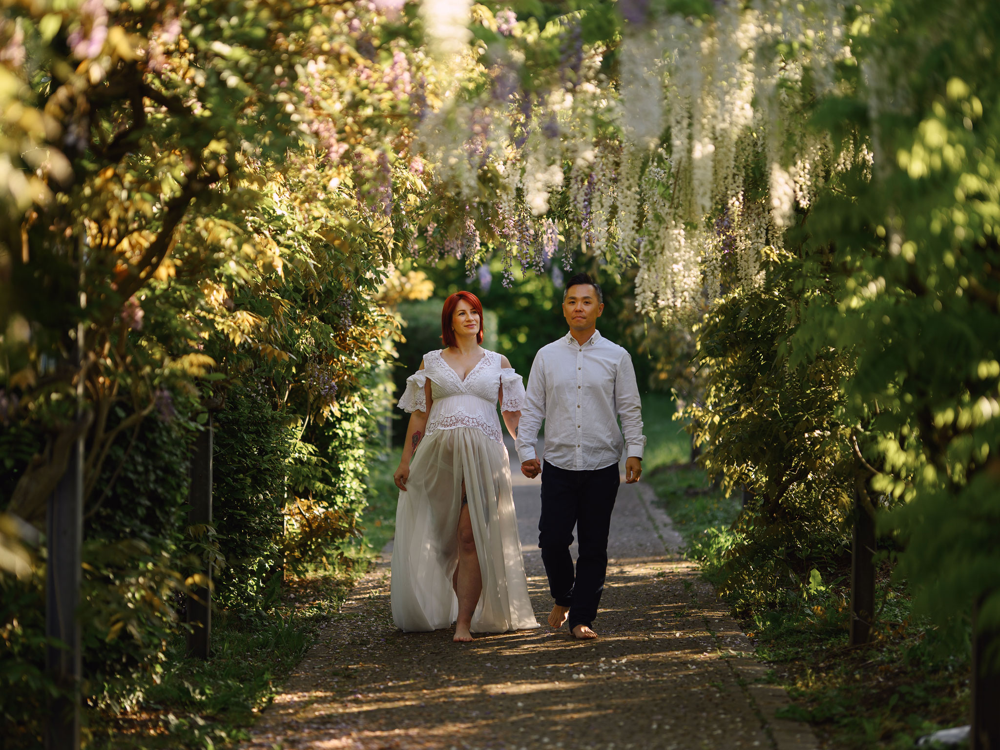
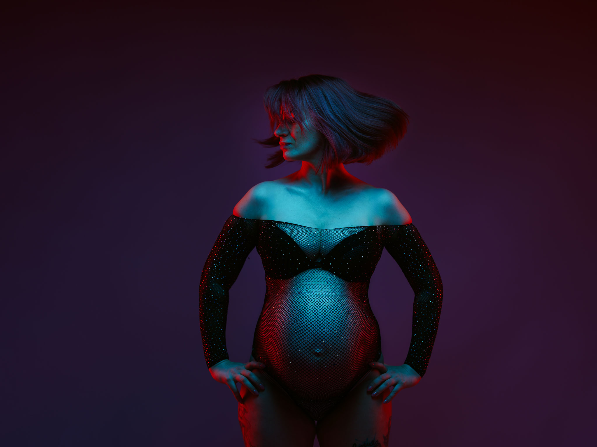
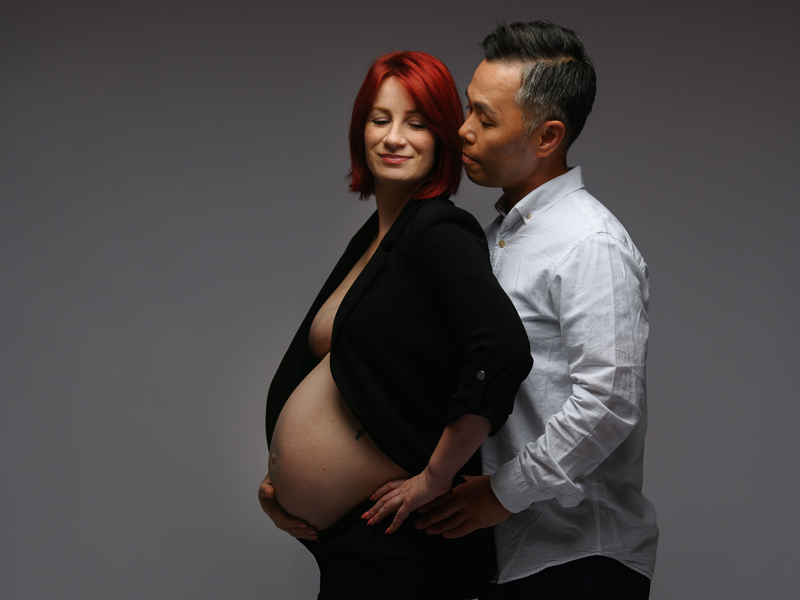

BABYBAUCHFOTOGRAFIE
Eine Session – viele Geschichten
Jede Schwangerschaft ist einzigartig – und genauso individuell darf auch eure Session sein.



Jede Frau erlebt ihre Schwangerschaft anders. Manche wünschen sich natürliche und emotionale Bilder im Grünen, andere lieben elegante Studioaufnahmen oder moderne Fine-Art-Portraits mit besonderem Licht.
Viele Frauen spüren sogar mehrere Seiten in sich gleichzeitig – zart, stark, ruhig, sinnlich und voller Vorfreude.
Genau deshalb muss eine Schwangerschaftssession für mich nicht nur einen einzigen Stil haben.
Eure Wünsche stehen im Mittelpunkt
Bei mir darf eure Session so aussehen, wie ihr euch selbst fühlt.
Ihr könnt euch für einen klaren Stil entscheiden und möglichst viele verschiedene Aufnahmen in genau diesem Look erhalten – oder wir kombinieren mehrere unterschiedliche Bildwelten innerhalb einer einzigen Session.
Romantischer Outdoor-Look, minimalistisches Studio, emotionale Paarbilder, modernes Fine Art oder sinnliche Portraits mit cinematic Lichtstimmung – alles ist möglich.
Wichtig ist nicht, was gerade im Trend ist. Wichtig ist, dass die Bilder wirklich zu euch passen.
Jede Session beginnt mit einem Gespräch
Deshalb wird jede Schwangerschaftssession bei mir vorab ausführlich besprochen.
Mir ist es besonders wichtig, euch kennenzulernen und gemeinsam genau zu planen, was wir während der Session umsetzen möchten.
Welche Stimmung mögt ihr? Welche Farben? Welche Kleidung? Soll die Session eher natürlich, elegant, emotional oder modern wirken?
Viele Frauen kommen anfangs mit dem Gedanken:
„Ich weiß gar nicht genau, was ich möchte.“
Und genau dafür bin ich da.
Gemeinsam entwickeln wir eine Session, die sich nicht wie ein fertiges Standardpaket anfühlt, sondern wie eure eigene Geschichte.
Keine Schwangerschaft gleicht der anderen
Manche Frauen möchten ihren Partner in die Bilder integrieren, andere wünschen sich ganz bewusste Portraits nur für sich selbst.
Einige lieben natürliche Bewegungen und echtes Lachen, andere bevorzugen eine ruhige, elegante Fine-Art-Ästhetik.
Es gibt hier kein richtig oder falsch. Die schönsten Bilder entstehen immer dann, wenn ihr euch wiedererkennt und euch während der Session wohlfühlt.
Erinnerungen, die zu euch passen
Schwangerschaftsfotografie bedeutet für mich nicht, eine Vorlage nachzustellen.
Sie bedeutet, eure Geschichte sichtbar zu machen.
Deshalb darf jede Session anders aussehen. Denn am Ende sollen nicht einfach schöne Bilder entstehen – sondern Erinnerungen, die sich auch Jahre später noch nach euch anfühlen.
Möchtet ihr eure eigene Geschichte erzählen?
Gemeinsam gestalten wir eine Schwangerschaftssession, die genau zu euch passt – natürlich, emotional, elegant oder modern.